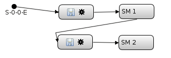

Hier gibt es einige Hinweise die beim Aufbau eines Scans zu beachten sind. Gerade im Vergleich mit dem bisherigen Messprogramm gibt es einige Unterschiede.
Bei der Verwendung von triggerbaren Channels ist es sinnvoll den Scan Mode der Channels durch eine Prescan Aktion passiv zu sezten. Dann ist sichergestellt, das der Channel sich nicht selbst triggert während des Scannens. Als Postscan Aktion kann der Channel dann z.B. auf 1 Sekunde als ScanMode gesetzt werden.
Unterschied zum alten MP: Dort wurden alle Channels die im Scan ausgelesen werden vorher auf passiv gesetzt und hinterher wieder zurück in ihren Ausgangszustand.
Bei der Verschachtelung von Scan Modulen muss man aufpassen, dass bei der Ausführung des Scans ein H5 File erzeugt wird, das vernünftig ausgewertet werden kann. Bei der folgenden Art von Verschachtelung muss auf 2 Dinge geachtet werden und beide Varianten führen vermutlich nicht zu dem gewünschten Ergebnis.

Wenn man in einem äußeren Scan Module (hier SM 1) Detector Channels ausliest, muss man darauf achten, dass nicht nochmal die gleichen Channels in den inneren Scan Modulen (hier z.B. SM 2) ausgelesen werden. Das kann dazu führen, dass für die gleichen PosCounter Einträge Channels doppelt gelesen werden und dann unklar ist zu welchem Zeitpunkt der Wert wirklich aufgenommen wurde.
Unterschied: Im alten Messprogramm wurden beim Anlegen eines nested (= inneren) Scan Modules automatisch die Channels im äußeren Scan Module entfernt und im inneren Scan Module hinzugefügt.
Der erste Messwert in einem nested Scan Module hat immer die gleiche PosCount Nummer wie die gerade angefahrene Position des äußeren Scan Modules.
Wenn also als nested Scan Modul wie hier im Beispiel als erstes die Motor Positions gespeichert werden, bekommen die Achsen des äußeren Scan Modules (hier SM1) die gleichen PosCount Nummern wie die Sava Motor Positions Werte.
1.) Wenn im SM1 keine Channels ausgelesen werden, gibt es für die PosCounter Einträge der Achsen aus dem SM1 keine zugehörigen Channel Werte und die IDL Routine read_hdf_b2 denkt, dass alle Werte MotorPositions sind. Die Achsen aus dem äußeren Scan fehlen dann im data Array.
2.) Wenn jedoch im SM1 Channels ausgelesen werden, gibt es zugehörige Channel Werte für die PosCounter Einträge der Achsen aus dem SM1 und dem Save Axis Positions. Somit packt die IDL Routine read_hdf_b2 alle Achsen die eigentlich MotorPositions sind in das data Array (falls die MotorPositions in den default Bereich geschrieben werden)
Wenn man bei der Verwendung von Monitored Devices nicht aufpasst, erzeugt man zum Teil sehr große Datenfiles. So monitort die Einstellung „as in device definition” alle Optionen der Messplatzbeschreibung die mit monitor=true im messplatz.xml File stehen. Das hat dann z.B. am IDB Messplatz mal schnell über 1500 zusätzliche Datasets im H5-File ergeben.
Auch die Verwendung von „used in scan” kann schnell zuviele Monitore setzen, wenn im Scan Axis Positions und/oder Channel Values weggeschrieben werden. Dadurch werden nämlich fast alle Geräte im Scan genutzt und somit werden dann auch zu diesen Geräten die Monitore gesetzt.
Am sparsamsten ist es sich zu überlegen, welche Monitore einen wirklich interessieren und diese selbst auszuwählen über den edit Button.
Wenn man in einer Motor Achse den Plugin Type MotionDisabled auswählt, so wird für diese Achse nur die Motorposition weggeschrieben ohne Positionierung.
Wichtig: Die Achse Counter nutzt für jedes Scan Modul einen separaten Counter und steht deswegen in dem ScanModul SaveMotorPositions immer auf 0. Damit kann der Counter auch weggelassen werden.
Wenn man in einer Motor Achse diskrete Positionen deklariert, dürfen diese keine führenden Leerzeichen enthalten.